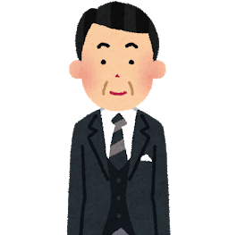

Ken's Parents Interview.
Interviewer
Ken's Mam

Ken's Dad
この度は賢とまいの結婚、そしてみはるのご出産おめでとうございます！
今日は、賢について教えてください〜
まず最初の質問です！
「息子の一番の自慢」を教えてください 😎
一番の自慢は・・・折り紙が上手なの🤘
あまり息子の事を分かってないかも知れませんが、意外と女性的で編み物ができます。
なるほど！！荒々しく野蛮なイメージでしたが、意外と繊細な一面もあるのですね！！
では、次の質問です！
「今までで１番の親子喧嘩」の思い出を教えてください〜🍵
思い出せないのだけど、何かあるかしら？
一緒にいる時間が短かったのであまり親子喧嘩は無かったですね
な、なるほど。。。
ゆみさん、賢はよく遅刻してましたが、そのときは喧嘩とかなかったですか？
それがいいね👍そうしよう！
ですね！！ではそのエピソードで思い出をお願いします！！
遅刻の事で大丈夫です🙏よろしく。
なるほど。
賢さんは、幼少期からとても利口なお子様であったことが察せられます。
それでは最後のに新婚の２人に一言お願いしますぅ！！！！！！フゥーーー！！！！！！！
仲良くいつも笑って生活してください。何か辛い事があっても、母の願いです。
二人仲良く、子供は自由に。
ありがとうございました。
賢のお母様とお父様でした😚
優しいご両親の下、伸び伸び育てられたことが伺えました。
賢は、今後一生かけて二人に恩返しをしていくことでしょう。
現場からは以上です🙌
：ikeda-wedding-party/ikeda-wedding-2nd-party
Copyright 2019.02 Y.Kobayashi / K.Sakasai